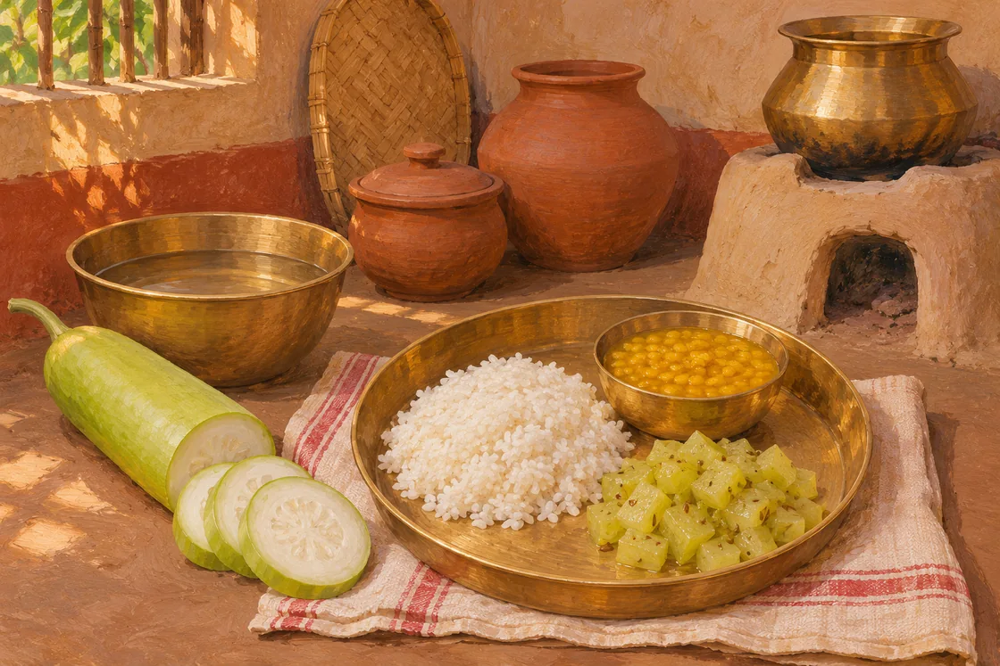
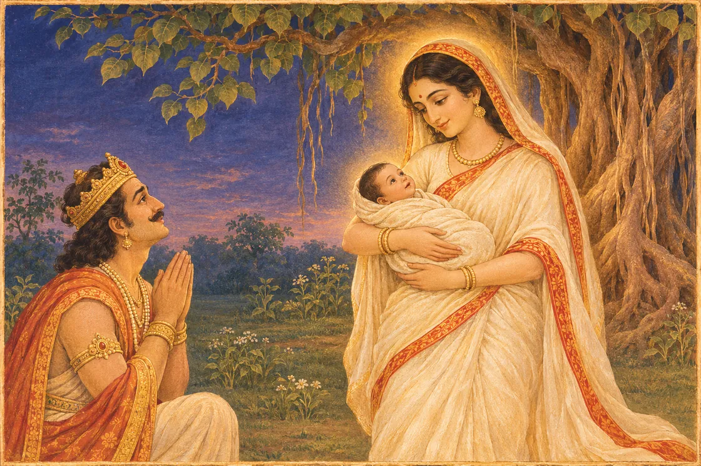

13–16 नवंबर 2026 की तिथियाँ नई दिल्ली के संदर्भ पंचांग से हैं। 15 नवंबर का अर्घ्य स्थानीय सूर्यास्त से और 16 नवंबर का अर्घ्य स्थानीय सूर्योदय से जुड़ा है।
दृक पंचांग में अपना शहर चुनें और वर्ष की पुष्टि करें। नीदरलैंड्स में अपना स्थानीय शहर चुनें और वहाँ का समय देखें (नवंबर में CET)। दिल्ली की सूची में भारतीय स्थानीय समय है। जुटने का समय आयोजकों से अलग से पता करें।
छठ की संध्या में पूजा का केंद्र वह क्षितिज है जहाँ सूरज डूब रहा होता है। परिवार प्रसाद लेकर घाट पर पहुँचते हैं और अस्त होते सूर्य की ओर मुख करते हैं। भोर से पहले वे फिर लौटते हैं, इस बार उगते सूर्य के स्वागत के लिए। छठ को सूर्य षष्ठी भी कहते हैं। षष्ठी छठी चंद्र तिथि है। शरद ऋतु में मनाए जाने वाले इस पर्व की मुख्य तिथि कार्तिक शुक्ल षष्ठी है और चार दिनों का क्रम उसके आसपास की तिथियों तक फैला है। दृक पंचांग
पूजा में सूर्य देव और छठी मैया का स्मरण होता है। कई परिवार छठी मैया को माता षष्ठी के रूप में पूजते हैं और उनसे परिवार की कुशलता की कामना करते हैं। अर्घ्य श्रद्धा से अर्पित भेंट है। छठ में प्रायः छोटे पात्र से जल की धारा अर्पित की जाती है। व्रत एक धार्मिक संकल्प है, जिसमें उपवास, प्रार्थना और भोजन व तैयारी से जुड़े नियम हो सकते हैं। व्रत रखने वाले को व्रती कहते हैं। अक्सर महिलाएँ पूजा का नेतृत्व करती हैं और पुरुष भी व्रत रखते हैं। बिहार पर्यटन · बिहार भवन
संकल्प व्रती का होता है, लेकिन तैयारी में कई हाथ लगते हैं। कोई रसोई साफ़ करता है, कोई प्रसाद बनाता है, कोई दौरा उठाता है, कोई घाट पर दूसरों के लिए जगह बनाता है। घर में सीखे छठ के गीत तैयारी से लेकर घाट के रास्ते तक साथ चलते हैं। पहली बार छठ देखने वाले के लिए घर की तैयारी भी अर्घ्य के क्षण जितनी कुछ समझा सकती है। भारती राय
छठ के चार दिन
ये चित्र रसोई की तैयारी से घाट तक प्रचलित विधियों की झलक दिखाते हैं।

नहाय-खाय के भोजन का एक रूप।
· चतुर्थी
नहाय-खाय
स्नान और घर-रसोई की तैयारी से पर्व शुरू होता है। कई घरों में व्रती अरवा चावल, चने की दाल और लौकी या घर की परंपरा की कोई दूसरी सब्ज़ी खाते हैं। भोजन का रूप अलग-अलग हो सकता है। रसोई और बर्तनों की सफ़ाई में अक्सर परिवार के दूसरे सदस्य भी हाथ बँटाते हैं। बिहार पर्यटन · बिहार भवन
खरना के प्रसाद के लिए खीर और रोटी।
· पंचमी
खरना / लोहंडा
दिन भर के उपवास के बाद संध्या में पूजा और प्रसाद का अर्पण होता है। गुड़ की चावल वाली खीर और रोटी खरना के जाने-पहचाने प्रसाद हैं। व्रती प्रसाद ग्रहण करते हैं और उसे बाँटा जाता है। अनेक घरों में इसके बाद लंबा उपवास शुरू होता है, जो अगले दिन संध्या अर्घ्य से होकर भोर के अर्घ्य के बाद तक चलता है। दृक पंचांग · बिहार भवन
संध्या अर्घ्य से पहले परिवार प्रसाद लेकर घाट पर जुटते हैं।
· षष्ठी
संध्या अर्घ्य
मुख्य संध्या अर्घ्य स्थानीय सूर्यास्त के आसपास होता है। परिवार बाँस के सूप में प्रसाद लेकर जल के पास जाते हैं। जहाँ स्थिति अनुकूल हो, वहाँ व्रती अक्सर उथले जल में खड़े होकर अस्त होते सूर्य की ओर मुख करते हैं। अर्घ्य के समय परिवार के लोग पात्र या सूप सँभालने में हाथ बँटाते हैं। उसके बाद गीत या घर की पूजा का क्रम भी हो सकता है। बिहार पर्यटन · अतुल्य भारत
श्रद्धालु सूर्योदय से पहले फिर जल के पास पहुँचते हैं।
· सप्तमी
उषा अर्घ्य और पारण
परिवार भोर से पहले फिर घाट पहुँचते हैं और उगते सूर्य को दूसरा अर्घ्य देते हैं। कुछ जगह इसे बिहानिया अर्घ्य कहते हैं। इसके बाद पारण, यानी व्रत का समापन, होता है। व्रत खोलने और प्रसाद बाँटने की विधि घर की परंपरा के अनुसार बदल सकती है। दृक पंचांग · कोलकाता नगर निगम
आस्था की कथाएँ और लोकपरंपरा
एक पिता अपने शिशु को गोद में लिए वन की ओर जाता है। एक योद्धा सूर्य को प्रणाम करने नदी में उतरता है। वनवास में ताँबे का एक पात्र पांडवों और उनके अतिथियों की भूख मिटाता है। छठ में इन कथाओं को आज भी याद किया जाता है।
जब छठी मैया ने शिशु को जीवन लौटाया

षष्ठी देवी की गोद में वह शिशु, जिसे उन्होंने जीवन लौटाया। एआई की मदद से बनाया गया चित्र।
राजा प्रियव्रत और रानी मालिनी को लंबे समय से संतान की प्रतीक्षा थी। ऋषि कश्यप ने यज्ञ कराया और मालिनी को उसकी आहुति का एक अंश दिया। समय बीता और रानी ने एक पुत्र को जन्म दिया, पर शिशु जीवित नहीं रहा। प्रियव्रत उसे सीने से लगाए वन की ओर चले। वहाँ भी वे रोते हुए उसे बाँहों में थामे रहे।
तभी एक दिव्य रथ दिखाई दिया। उसमें आई देवी ने अपना परिचय देवसेना के रूप में दिया। वे षष्ठी भी कहलाती हैं और बच्चों की रक्षा करती हैं। देवी ने शिशु को गोद में लेकर उसे जीवन लौटा दिया। राजा ने देखा कि उनका बेटा मुस्करा रहा है। बालक को लौटाने से पहले देवी ने प्रियव्रत से अपनी पूजा करने को कहा, और राजा ने वचन दिया। आज भी घाट पर छठी मैया से यही प्रार्थना की जाती है कि हमारे बच्चे सकुशल रहें।
दोपहर में सूर्य की आराधना करते कर्ण। एआई की मदद से बनाया गया चित्र।
छठ में कही जाने वाली एक कथा में कर्ण नदी में खड़े हैं। वे सूर्य की ओर मुख करके लोटा उठाते हैं और जल की धारा वापस नदी में गिरती है। युद्ध के लिए प्रसिद्ध कर्ण यहाँ प्रार्थना में लीन हैं। सूर्य की ओर मुख किए वे ऐसे हैं जैसे कोई पुत्र अपने पिता को प्रणाम करता है।
महाभारत में उनकी सूर्य भक्ति का एक और प्रसंग है। कर्ण दोपहर में जल से उठकर हाथ जोड़कर सूर्य को प्रणाम करते थे। दान माँगने वाले जानते थे कि वे कहाँ मिलेंगे। एक दिन इंद्र ब्राह्मण का वेश धरकर आए और उन्होंने कर्ण से वही कवच और कुंडल माँगे जो उनकी रक्षा करते थे। कर्ण उन्हें देने को तैयार हो गए। छठ की कथा में जल में खड़े, सूर्य की ओर ध्यान लगाए कर्ण की छवि आज भी याद की जाती है।
ताँबे के उस पात्र के साथ द्रौपदी, जिसे अक्षय पात्र कहा जाता है। एआई की मदद से बनाया गया चित्र।
पांडव वनवास में गए तो कुछ ब्राह्मण भी उनके साथ चल पड़े। युधिष्ठिर को चिंता हुई कि वन में वे इतने अतिथियों को भोजन कैसे कराएँगे। ऋषि धौम्य ने उन्हें सूर्य की आराधना करने को कहा। उनकी प्रार्थना से प्रसन्न होकर सूर्य ने ताँबे का एक पात्र दिया। द्रौपदी जब तक स्वयं भोजन न कर लें, तब तक उस पात्र से भोजन मिलता रहता था।
पहले अतिथियों ने भोजन किया, फिर भाइयों ने और अंत में द्रौपदी ने। तभी उस दिन का भोजन समाप्त हुआ। इसी पात्र को अक्षय पात्र के नाम से याद किया जाता है। छठ की कुछ लोककथाओं में द्रौपदी स्वयं पांडवों के साथ व्रत रखती हैं। वनपर्व के इस प्रसंग में युधिष्ठिर प्रार्थना करते हैं और द्रौपदी के भोजन से दिन का क्रम पूरा होता है। दोनों कथाओं में कठिन घड़ी में परिवार सूर्य की शरण लेता है।
दिन का प्रकाश विदा होने को होता है, तब घाट पर पहला अर्घ्य दिया जाता है। इस भाव में दिन भर जो मिला उसके लिए कृतज्ञता और दिन को ससम्मान विदा देने का ढंग देखा जा सकता है।
भोर में
दूसरा अर्घ्य प्रकाश की वापसी के समय दिया जाता है। रात भर की प्रतीक्षा के बाद भोर में नई शुरुआत का भाव है। वही जल और अर्पण का वही भाव दोनों क्षणों को जोड़ते हैं।
यह पर्व-क्रम पर संपादकीय चिंतन है। अलग-अलग परिवार अपने शब्दों में इसका अर्थ बताते हैं।
प्रसाद और अर्घ्य की सामग्री
प्रसाद की सामग्री और अर्पण के पात्र अलग-अलग रखे हैं। संध्या अर्घ्य के दृश्य में घाट पर टोकरी में सजा प्रसाद दिखाया गया है। एआई की मदद से बनाया गया चित्र।
सूप और दौरा
बाँस का उथला सूप मूलतः अनाज फटकने का पात्र है, जिसमें प्रसाद सजाया जा सकता है। गहरा दौरा प्रायः सामग्री घाट तक ले जाने के काम आता है।
ठेकुआ
गेहूँ के आटे और गुड़ या चीनी की एक तली हुई मिठाई। घरों की विधियाँ अलग होती हैं। कोई ठेकुए पर साँचे से छाप बनाता है, कोई हाथ से आकार देता है।
फल, नारियल और गन्ना
मौसमी फल, अक्सर केले, और साबुत नारियल कई सूपों में रखे जाते हैं। कुछ घरों की कोसी परंपरा में गन्ने की छोटी छतरी के नीचे दीप और प्रसाद रखे जाते हैं।
चावल, अर्घ्य और दीप
पहले दिन के भोजन और खरना की खीर में चावल का स्थान है। अर्घ्य में जल आम है और कुछ परंपराओं में दूध भी अर्पित होता है। मिट्टी के दीप सूप के पास या घर की पूजा-स्थली में रखे जा सकते हैं।
घर में उपलब्ध फल, स्थानीय रिवाज और पीढ़ियों से सीखी विधि के अनुसार सूप बदलता है। चित्र में कुछ उदाहरण हैं। बिहार भवन · अतुल्य भारत
अलग-अलग क्षेत्रों में छठ
छठ की गहरी जड़ें बिहार, झारखंड, पूर्वी उत्तर प्रदेश और नेपाल के तराई क्षेत्र के कुछ हिस्सों में हैं। किस नदी या तालाब पर पूजा होती है, कौन-से गीत गाए जाते हैं और प्रसाद कैसे बनता है, इनसे उसकी स्थानीय पहचान बनती है। नेपाल पर्यटन बोर्ड जनकपुर को प्रमुख आयोजन-स्थल बताता है। वह काठमांडू में बागमती के किनारे जुटने वाले तराई से जुड़े परिवारों का भी उल्लेख करता है। अतुल्य भारत · एसोसिएटेड प्रेस · नेपाल पर्यटन बोर्ड
लोगों के साथ छठ दूर के शहरों तक पहुँची। घर के गीत और बाँस के सूप साथ आ सकते हैं। नदी की जगह किसी अनुमति प्राप्त तालाब, तय घाट या अस्थायी सामुदायिक स्थल पर लोग मिल सकते हैं। नीदरलैंड्स या किसी और देश में स्थल की अनुमति और जुटने का समय स्थानीय आयोजकों से पता करें। सूर्योदय और सूर्यास्त के लिए अपने शहर का पंचांग देखें। सार्वजनिक कार्यक्रम की शुरुआत और अर्घ्य का क्षण अलग हो सकते हैं। भारती राय
पहली बार आने वाले को अक्सर घाट की पूजा दिखती है। उसके पीछे घर और मुहल्ले का काम है, प्रसाद बनाने से लेकर सबके लिए किनारे तक पहुँच बनाने तक। यही साझा मेहनत बताती है कि घर से दूर रहने पर भी छठ क्षेत्रीय पहचान का सहारा क्यों बनी रहती है।
घाट पर माँग से नाक तक नारंगी सिंदूर। एआई की मदद से बनाया गया चित्र।
माँग से नाक तक नारंगी सिंदूर
कुछ घाटों पर विवाहित महिलाएँ माँग से माथे के बीचोंबीच होते हुए नाक की नोक तक नारंगी सिंदूर लगाती दिखती हैं। बिहार के प्रत्यक्ष वृत्तांतों में छठ के समय इस ख़ास रूप का उल्लेख मिलता है। कुछ परिवार इसे पति की लंबी आयु और परिवार की कुशलता की कामना से जोड़ते हैं। रंग, लंबाई और लगाने का चलन व्यक्ति और परंपरा के अनुसार बदलता है। हेडन सेथ कैंटर · म्यूज़ियम ऑफ़ मटीरियल मेमरी
यह पर्व हमें किस ओर देखने को कहता है?
भोर के बाद जल के किनारे। एआई की मदद से बनाया गया चित्र।
दिन ख़त्म हो गया, यह जानना और उसे ढलते हुए देखने के लिए ठहरना दो अलग अनुभव हैं। छठ में दो बार ऐसे ठहरने का अवसर मिलता है। प्रसाद में फ़सल पास आती है, घाट पर साझा जल-स्थल की देखभाल दिखती है और भोर की प्रतीक्षा में समय भी पूजा का हिस्सा बन जाता है। व्रती इस अनुशासन को अपनी आस्था के शब्दों में कह सकते हैं। कोई और उसी कृतज्ञता को भोजन बनाने, दूसरे का दौरा उठाने या पूजा के बाद किनारा साफ़ छोड़ने में देख सकता है।
सनातन सीरीज़ एक स्वतंत्र, ग़ैर-व्यावसायिक शैक्षिक ब्लॉग है। छठ की विधियाँ और उनके अर्थ घर और क्षेत्र के अनुसार बदलते हैं। कोई तथ्य सुधारना हो तो संबंधित अंश और उसका स्रोत गिटहब पर परियोजना के माध्यम से भेजें। गिटहब पर सनातन सीरीज़